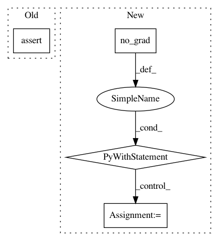

1082ba352c5f1d524b1fcba43ee611280b169224,fairseq/trainer.py,Trainer,valid_step,#Trainer#Any#,310
Before Change
// forward pass
sample = self._prepare_sample(sample)
_loss, sample_size, logging_output, oom_fwd = self._forward(sample, eval=True)
assert not oom_fwd, "Ran out of memory during validation"
// gather logging outputs from all GPUs
if self.args.distributed_world_size > 1:
sample_sizes, logging_outputs = zip(*distributed_utils.all_gather_list(
After Change
self.model.eval()
logging_output, sample_size = {}, 0
with torch.no_grad():
sample = self._prepare_sample(sample)
if sample is None:
sample = self._prepare_sample(self._dummy_batch)
_loss, sample_size, logging_output = self.task.get_loss(
self.model, self.criterion, sample,
)
// gather logging outputs from all replicas
if self.args.distributed_world_size > 1:
logging_output, sample_size = zip(*distributed_utils.all_gather_list(
[logging_output, sample_size],
))
In pattern: SUPERPATTERN
Frequency: 3
Non-data size: 4
Instances
Project Name: elbayadm/attn2d
Commit Name: 1082ba352c5f1d524b1fcba43ee611280b169224
Time: 2018-09-25
Author: edunov@apache.org
File Name: fairseq/trainer.py
Class Name: Trainer
Method Name: valid_step
Project Name: facebookresearch/pythia
Commit Name: d8f9592b209e368e4934b6b429443c2a8673de3f
Time: 2020-10-19
Author: junchen20@fb.com
File Name: tests/models/test_mmbt.py
Class Name: TestMMBTTorchscript
Method Name: test_finetune_model